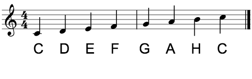
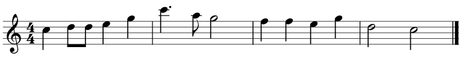

Tonen G ligger altså på linjen som G-nøkkelen peker på. De andre notene blir ikke enkelt pekt ut, men her kan du se flere andre noter, og hvilke notelinjer de ligger på.

Du kan også se at ikke alle notene ligger innenfor de fem notelinjene. Det samme gjelder for eksempelet vi viste i starten av rytmer og takter:

De aller øverste tonene her ligger utenfor notelinjene. Den øverste av de øverste i eksempelet er også en C. Tonen C kan altså ligge på mange forskjellige steder. Disse variantene av C låter veldig likt, bare at jo høyere opp de ligger i notebildet, jo høyere høres de ut.
Om man bare kunne spille noter innenfor notelinjene ville man ikke hatt så altfor mange toner å uttrykke seg med. Man har derfor noter på hjelpelinjer som kan ligge over og under de vanlige notelinjene, som hjelper en musiker å se hvilken tone de skal spille.